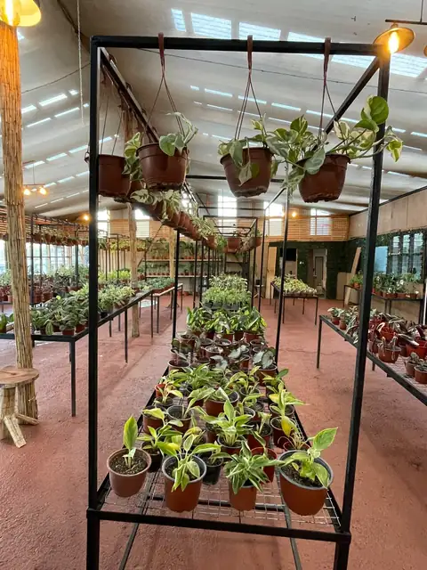
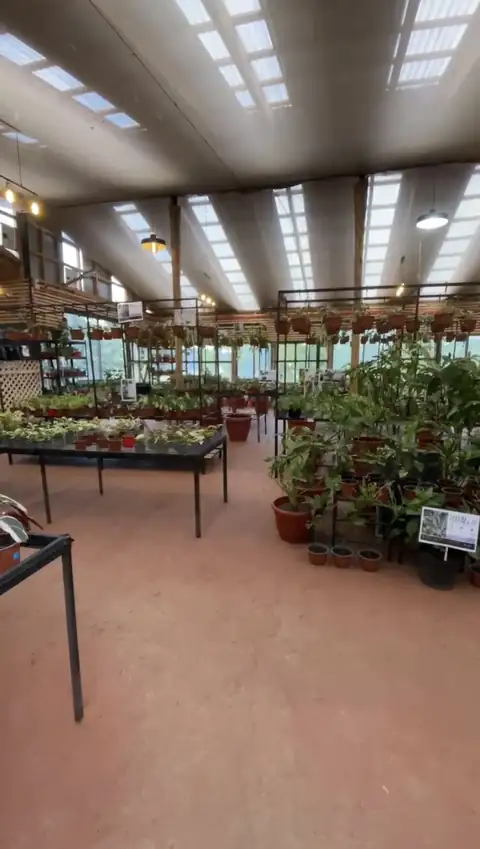
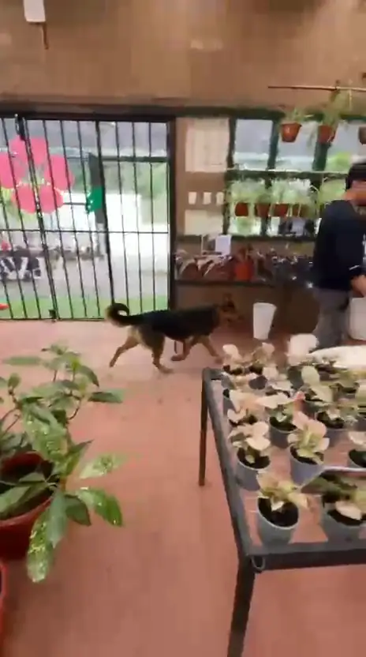
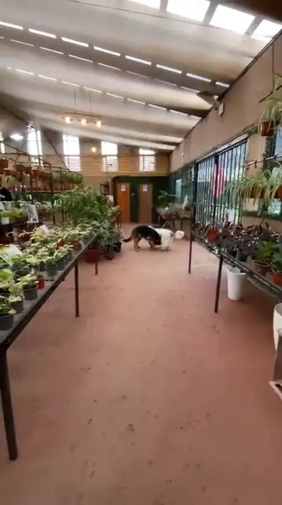
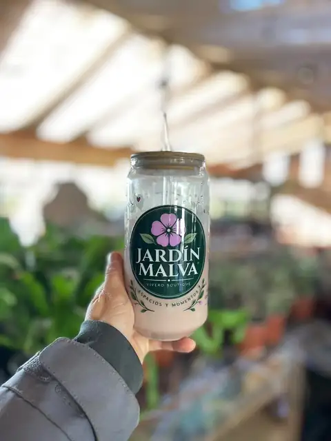

Vivero boutique · San Pedro de la Paz
Jardín Malva
cultivar, cuidar y vivir más lento
Plantas de interior, exterior y de colección, en un vivero pensado para recorrer con calma. Y con tu perro.
- Lunes a sábado · 9:30 a 18:30
- Ernesto Pinto Lagarrigue 793
El vivero
Lo que encontrarás
pasa a vernos
-
Plantas de interior
Para cada rincón de la casa, con mucha o poca luz.
-
Plantas de exterior
Para tu jardín, tu terraza o ese balcón que pide verde.
-
De colección
Especies especiales para quienes ya tienen la mano verde.
-
Consejo sin tecnicismos
Te contamos cómo cuidarla antes de que te la lleves.







Pet friendly
Ven con tu perro
aquí también es visita
En Jardín Malva los perros son bienvenidos. Y los nuestros suelen salir a recibirlos.

Ella es Petunia
Nuestra mascota. Siempre con delantal y lista para recibirte.
Visítanos
Te esperamos
- Dirección
- Ing. Ernesto Pinto Lagarrigue 793
San Pedro de la Paz, Biobío - Horario
- Lunes a sábado · 9:30 a 18:30
- Cómo reconocernos
- Busca la fachada negra con la flor malva.
Contacto
Conversemos
Pregunta por una planta, por cómo cuidarla o por cómo llegar.